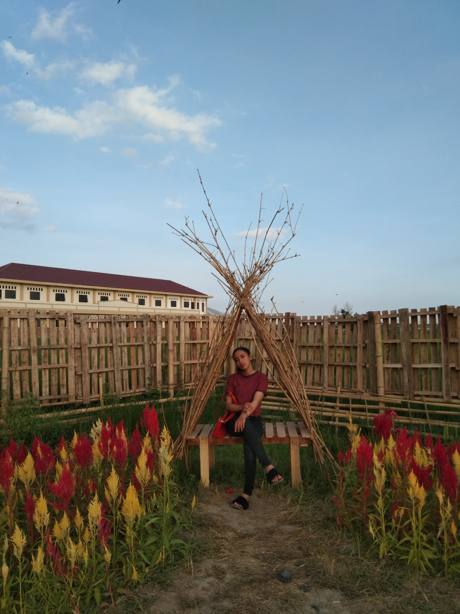

PROFILE

Full Name : Adelia Azzahrah hatuina
Nick Name : Adel
Place and Date Of Birth : Mataram, 6 August 2000
Sex : Female
Religion : Islam
Height : 152cm
Weight : 45kg
Nationaly : Indonesia
Marital Status : Single
Address : Jl.Adi Sucipto, Gg.Al-Ikhlas, Otak Desa Utara, Kel.Dayan Peken, Kec.Ampenan, Kota Mataram-Nusa Tenggara Barat
EDUCATION
| SCHOOL |
PLACE |
YEAR |
| PRIMARY SCHOOL |
SDN 39 Ampenan |
2006-2012 |
| JUNIOR HIGH SCHOOL |
SMPN 10 Mataram |
2012-2015 |
| SENIOR HIGHT SCHOOL |
SMKN 3 Mataran |
2015-2018 |
| DIPLOMA |
Universitas Bumigora |
2018-Now |
WORKING EXPRENCE
Dinas Komunikasi dan Informatika Provinsi NTB
OTHER SKILL
| Komputer : All Microsoft Office |